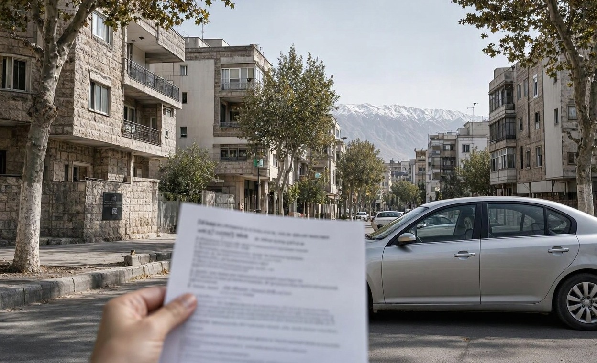
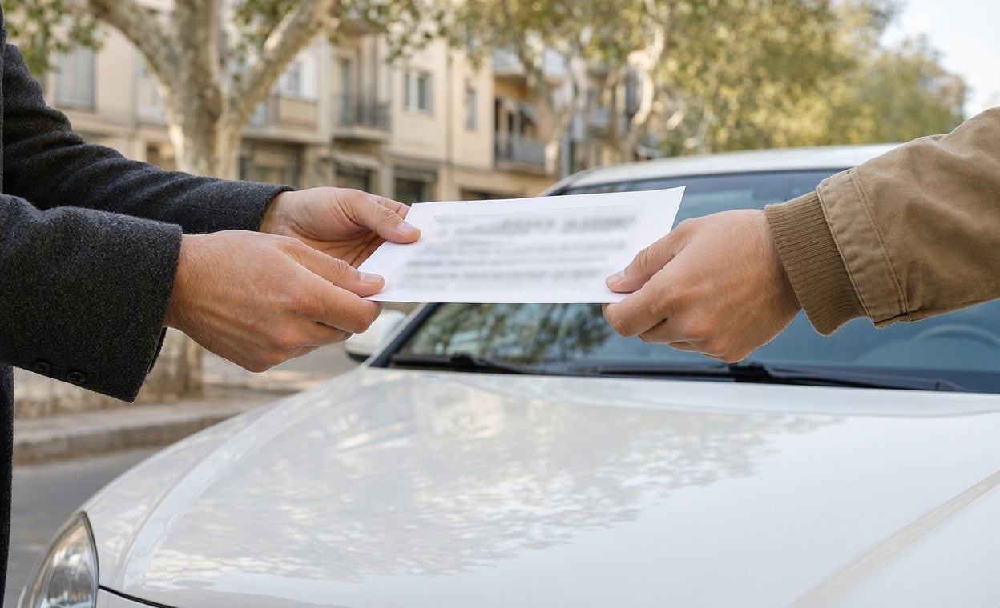
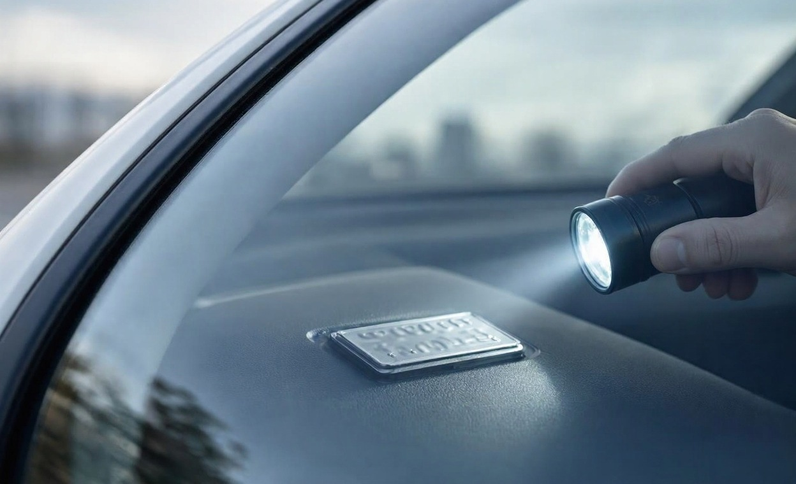
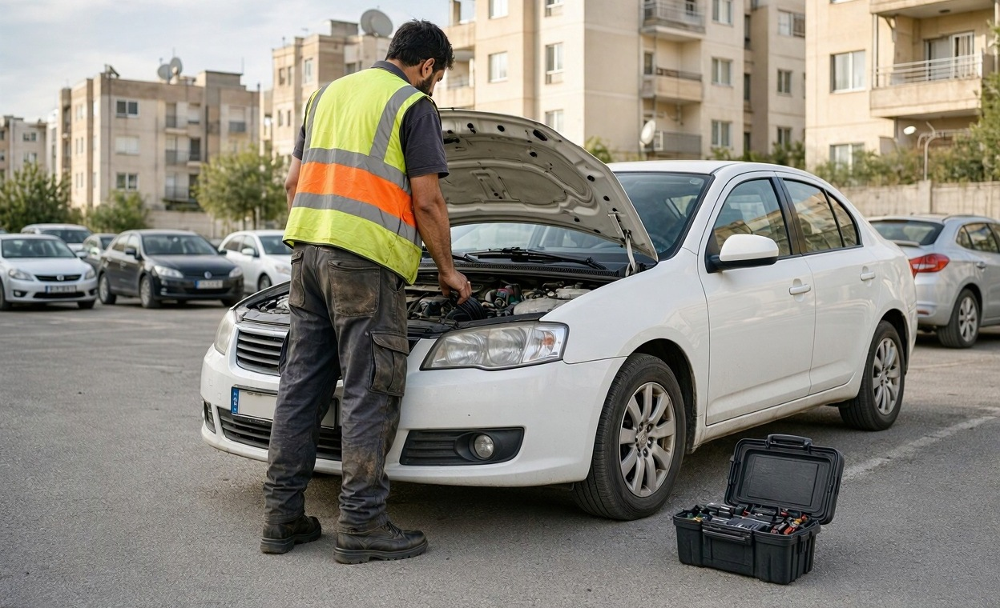
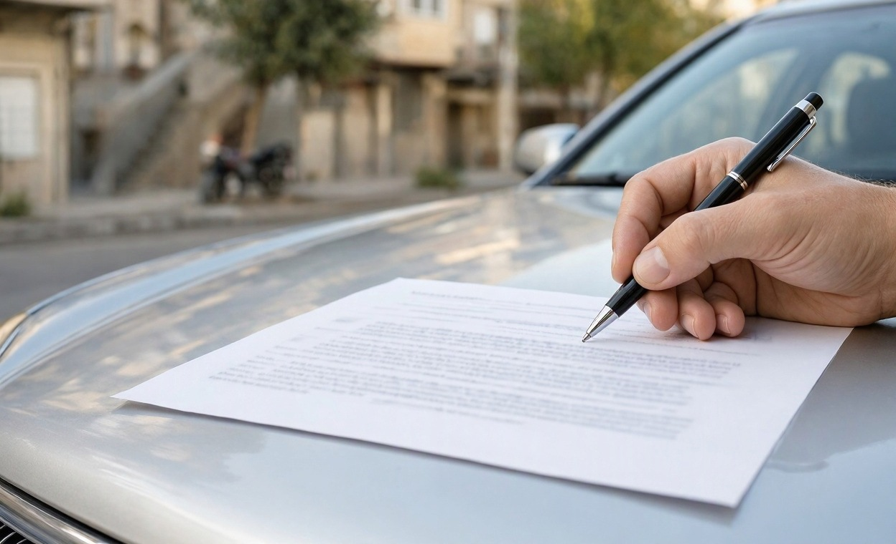

خودروی کارشناسی شده یعنی سالم؟ ۱۰ سؤال قبل از خرید
در آگهی نوشته «کارشناسیشده، بدون ایراد فنی». فروشنده هم یک برگه تاشده از داشبورد بیرون میآورد و میگوید لازم نیست برای کارشناس هزینه کنید. برگه مرتب به نظر میرسد، اما نمیدانید چه کسی آن را نوشته، چند ماه از آن گذشته و اصلاً موتور و شاسی را هم دیده یا نه.
خودروی کارشناسی شده یعنی کسی آن را بررسی کرده است؛ این عبارت بهتنهایی دربارهی سلامت خودرو چیزی نمیگوید. در این راهنمای مجموعه کارشناسی کارماچک توضیح میدهیم این برچسب در بازار چه معناهایی دارد و با کدام سؤالها میتوانید ارزش واقعی یک برگه کارشناسی را بسنجید.
خودروی کارشناسیشده الزاماً سالم نیست. این عبارت فقط میگوید خودرو زمانی بررسی شده است، و ارزش آن به چهار چیز بستگی دارد: کارشناس مستقل بوده یا نه، تاریخ بررسی چقدر تازه است، گزارش واقعاً به همین خودرو تعلق دارد یا نه، و کدام بخشها دیده شدهاند. اگر جواب یکی از اینها روشن نیست، برگه را کافی ندانید.
خلاصه در یک دقیقه
- «کارشناسیشده» تعریف ثابتی ندارد و میتواند از یک برگهی ضخامت رنگ تا گزارش کامل فنی و بدنه را شامل شود.
- گزارش خوب هم فقط وضعیت خودرو را در همان روز بررسی نشان میدهد.
- مهمترین سؤال این است که چه کسی کارشناس را انتخاب کرده و هزینهاش را داده است.
- شمارهی شاسی، کارکرد و تاریخ گزارش باید با خودروی جلوی چشم شما بخواند.
- فروشندهای که به گزارشش مطمئن است، معمولاً با کارشناسی دوباره به انتخاب شما مخالفتی ندارد.
خودروی کارشناسی شده در بازار چه معنایی دارد؟
این عبارت در آگهیها معنای یکسانی ندارد و هیچ استاندارد مشترکی پشت آن نیست. یکی با دیدن رنگ بدنه آن را مینویسد و دیگری بعد از یک بررسی کامل. پس اولین قدم این است که بفهمید منظور فروشنده کدام حالت است:
- برگهی رنگ و بدنه: فقط ضخامت رنگ و وضعیت قطعات بیرونی ثبت شده و دربارهی موتور و گیربکس چیزی نمیگوید.
- نظر تعمیرکار آشنا: ممکن است حرف درستی باشد، اما معمولاً مکتوب نیست و دامنهی بررسی مشخصی ندارد.
- بررسی فروشنده یا نمایشگاه: کسی که نفعش در فروش خودرو است آن را انجام داده یا سفارش داده است.
- گزارش کامل مستقل: بخش فنی، دیاگ، تست رانندگی، رنگ و شاسی با تاریخ و مشخصات خودرو ثبت شدهاند.
فقط حالت آخر به سؤال «خودرو در چه وضعی است؟» نزدیک میشود. حالتهای دیگر را میتوان نقطهی شروع گفتوگو دانست، نه دلیل کافی برای پرداخت پول.

برگه کارشناسی چه چیزی را ثابت نمی کند؟
حتی یک گزارش درست و مستقل هم تصویری از یک روز مشخص است. سه محدودیت را همیشه در نظر بگیرید.
گذر زمان: خودرو بعد از تاریخ گزارش ممکن است تصادف کرده باشد، کیلومتر زیادی رفته باشد یا قطعهای از آن خراب شده باشد. هرچه فاصله بیشتر باشد، اتکای شما به آن برگه باید کمتر شود.
دامنهی بررسی: گزارش فقط دربارهی چیزهایی حرف میزند که دیده است. سکوت گزارش دربارهی یک بخش به معنی سالم بودن آن نیست. در برگهی رنگ، نبودن حرفی از گیربکس یعنی گیربکس اصلاً بررسی نشده است.
آیندهی خودرو: هیچ کارشناسی نمیتواند خرابیهای بعدی را قطعی پیشبینی کند. کارشناس وضعیت فعلی و نشانههای قابل مشاهده را گزارش میکند، پس «سالم» در گزارش به معنی «خراب نمیشود» نیست.
برگه فروشنده را با بررسی مستقل بسنجید
اگر دربارهی تازگی یا دامنهی گزارش فروشنده مطمئن نیستید، یک بررسی به انتخاب خودتان این ابهام را کمتر میکند.
ثبت درخواست کارشناسی۱۰ سؤال قبل از خرید خودروی کارشناسی شده
این سؤالها را به همین ترتیب بپرسید. سه سؤال اول اعتبار برگه را میسنجند، سه سؤال بعد دامنهی آن را و چهار سؤال آخر تکلیف معامله را روشن میکنند.
درباره اعتبار گزارش
- چه کسی کارشناسی کرده و چه کسی هزینهاش را داده؟نام مجموعه یا کارشناس را بپرسید. اگر فروشنده یا نمایشگاه کارشناس را انتخاب کرده، گزارش لزوماً نادرست نیست، اما مستقل هم حساب نمیشود.
- تاریخ بررسی و کارکرد آن روز چقدر بوده؟تاریخ گزارش و کیلومتر ثبتشده را با کارکرد فعلی مقایسه کنید. اگر کیلومتر فعلی کمتر از عدد گزارش است، موضوع جدی است و باید روشن شود.
- گزارش دقیقاً مال همین خودرو است؟شمارهی شاسی، مدل، سال و رنگ در برگه را با کارت خودرو و خود خودرو تطبیق دهید. برگهای که هیچ مشخصهی یکتایی ندارد، قابل انتساب به این خودرو نیست.

درباره دامنه بررسی
- کدام بخشها بررسی شدهاند؟جدا بپرسید: موتور، گیربکس، جلوبندی، ترمز، دیاگ، رنگ تکتک قطعات، شاسی و ستونها. آنچه در برگه نیست را بررسینشده فرض کنید.
- تست رانندگی هم انجام شده؟بسیاری از ایرادهای گیربکس، فرمان و جلوبندی فقط در حرکت معلوم میشوند. بررسی خودروی پارکشده، حتی با دیاگ، تصویر کاملی از بخش فنی نمیدهد.
- کارشناس چه چیزی را نتوانسته ببیند؟گزارش خوب محدودیتهایش را میگوید، مثلاً اینکه زیر خودرو بدون بالابر کامل دیده نشده است. برگهای که هیچ محدودیتی ذکر نمیکند، جای سؤال دارد.
برای فهم اصطلاحات و عددهای برگه، راهنمای خواندن گزارش کارشناسی خودرو کمک میکند ایرادهای جزئی را از موارد جدی جدا کنید.
درباره تکلیف معامله
- چه ایرادهایی ثبت شده و کدامها رفع شدهاند؟برای هر مورد رفعشده فاکتور یا توضیح روشن بخواهید. تعمیر بعد از تاریخ گزارش، یعنی وضعیت خودرو با برگه فرق کرده است.
- نسخهی کامل گزارش را میتوانم ببینم؟صفحهی خلاصه کافی نیست. کسی که فقط بخشی از گزارش را نشان میدهد، ممکن است بقیهاش را دلیلی برای پنهان کردن داشته باشد؛ هرچند این بهتنهایی چیزی را ثابت نمیکند.
- با کارشناسی دوباره به انتخاب من موافقید؟این مهمترین سؤال فهرست است. جواب منفی بدون دلیل قانعکننده، از هر برگهای گویاتر است.
- حاضرید وضعیت اعلامشده در قولنامه نوشته شود؟اگر فروشنده میگوید خودرو فنی سالم و بیرنگ است، همین را در قولنامه بخواهید. برای متن و آثار حقوقی آن، از یک بنگاه معتبر یا مشاور حقوقی کمک بگیرید.
جواب فروشنده را چطور تفسیر کنیم؟
جوابها را نشانه بدانید، نه حکم. هیچکدام از این جملهها بهتنهایی سالم یا معیوب بودن خودرو را ثابت نمیکنند، اما مسیر بعدی شما را تعیین میکنند:
| جواب فروشنده | چه معنایی میتواند داشته باشد | اقدام پیشنهادی |
|---|---|---|
| «برگه را گم کردهام، ولی کارشناسی شده» | ادعایی که قابل بررسی نیست | آن را کارشناسینشده فرض کنید |
| «فقط رنگش را چک کردهایم» | بخش فنی و احتمالاً شاسی دیده نشده | بررسی فنی و شاسی را جدا انجام دهید |
| «نمایشگاه خودش کارشناس دارد» | گزارش از طرف ذینفع معامله است | گزارش را بخوانید و نظر مستقل بگیرید |
| «گزارش چند ماه پیش است» | وضعیت فعلی خودرو ممکن است فرق کرده باشد | دستکم بخش فنی و بدنه را بهروز کنید |
| «کارشناس خودتان را بیاورید» | نشانهی خوبی است، اما تضمین سلامت نیست | زمان و محل مناسب را هماهنگ کنید |
چه زمانی باید دوباره کارشناسی کرد؟
اگر برگهی موجود هر چهار شرط را داشته باشد، یعنی مستقل، تازه، مرتبط با همین خودرو و کامل باشد، شاید فقط لازم باشد بخشهای پرریسک را دوباره ببینید. در این حالتها اما بررسی کامل خودرو پیش از معامله معقولتر است:
- کارشناس را فروشنده یا نمایشگاه انتخاب کرده است.
- از تاریخ گزارش زمان زیادی گذشته، یا کیلومتر قابل توجهی اضافه شده است.
- گزارش فقط رنگ و بدنه را پوشش میدهد.
- خودرو گیربکس اتوماتیک یا CVT دارد و بررسی گیربکس در برگه کلی است.
- قیمت خودرو پایینتر از عرف بازار است و دلیل روشنی برای آن گفته نمیشود.
- آنچه در تست رانندگی حس میکنید با متن گزارش نمیخواند.

نتیجهی بررسی را میشود در چانهزنی هم به کار برد. با داشتن فهرست ایرادها، از قیمت گذاری خودرو برای برآورد تصویر کلی ارزش استفاده کنید و بعد سراغ هزینهی تعمیر هر ایراد بروید.
اگر هنوز چیزهای دیگری برای بررسی دارید، چک لیست خرید خودرو دست دوم بقیهی مسیر را مرتب میکند.
کارماچک در این تصمیم چه نقشی دارد؟
کارماچک یک ارائهدهندهی خدمات کارشناسی خودرو در ایران است که وضعیت فنی، رنگ و بدنه را بررسی میکند. ما فقط ایراد خودرو را شناسایی نمیکنیم؛ اثر آن روی هزینه تعمیر و ارزش واقعی معامله را هم مشخص میکنیم.
جمع بندی
خودروی کارشناسی شده را با خودروی سالم یکی ندانید. برگه را مثل هر ادعای دیگری بسنجید: چه کسی نوشته، کی نوشته، برای کدام خودرو نوشته و چه بخشهایی را دیده است. اگر فروشنده به این سؤالها راحت جواب میدهد و با بررسی به انتخاب شما مشکلی ندارد، مسیر معامله روشنتر است. اگر نه، قبل از پرداخت بیعانه دست نگه دارید.

پیش از قولنامه، خودرو را به انتخاب خودتان بررسی کنید
اگر جواب سؤالها کامل نبود، یک گزارش مستقل از وضعیت فنی و بدنه میتواند تصمیم را روشنتر کند.
رزرو کارشناسیسؤالات متداول
آیا خودروی کارشناسیشده ضمانت دارد؟
نه بهخودیخود. کارشناسیشده بودن به معنی ضمانت نیست. بعضی مجموعهها برای گزارش خود ضمانت یا تعهد مشخصی میدهند و بعضی نه. اگر چنین چیزی اعلام شده، متن آن، مدت، بخشهای تحت پوشش و اینکه برای خریدار بعدی هم معتبر است یا نه را کتبی ببینید.
برگه کارشناسی تا چند وقت اعتبار دارد؟
مدت ثابت و همگانی برای آن وجود ندارد و گزارش فقط وضعیت همان روز را نشان میدهد. هرچه زمان و کیلومتر بیشتری از تاریخ بررسی گذشته باشد، اتکا به آن کمتر میشود. برای تصمیم خرید، بهتر است گزارش به زمان معامله نزدیک باشد یا بخشهای مهم دوباره بررسی شوند.
میتوانم به کارشناسی نمایشگاه اعتماد کنم؟
میتوانید آن را بخوانید، ولی کافی ندانید. نمایشگاه در فروش خودرو ذینفع است، پس حتی اگر گزارش درست باشد، مستقل به حساب نمیآید. گزارش را نقطهی شروع بدانید و در صورت امکان بررسی جداگانهای با کارشناس انتخابی خودتان انجام دهید.
اگر فروشنده اجازه کارشناسی دوباره ندهد چه کنم؟
اول دلیلش را بپرسید و زمان یا محل دیگری پیشنهاد دهید. اگر فروشنده هیچ بررسی مستقلی را نمیپذیرد، این ثابت نمیکند خودرو ایراد دارد، اما شما هم اطلاعات کافی برای تصمیم ندارید. در این حالت بهتر است پرداختی نکنید و گزینههای دیگر را هم ببینید.
خودرو با گزارش سالم بعد از خرید خراب شد؛ یعنی کارشناس اشتباه کرده؟
لزوماً نه. گزارش وضعیت روز بررسی را میگوید و بعضی خرابیها بعد از آن رخ میدهند یا نشانهی قابل مشاهدهای نداشتهاند. اگر ایراد از روز بررسی وجود داشته و باید دیده میشد، متن گزارش و شرایط اعلامشدهی آن مجموعه را بررسی کنید و در صورت لزوم از مشاور حقوقی کمک بگیرید.
برای خودروی کارشناسیشده هم باید تست رانندگی کنم؟
بله. تست رانندگی شما جای کارشناس را نمیگیرد، اما میتواند نشان دهد آنچه در برگه آمده با رفتار خودرو میخواند یا نه. اگر در تعویض دنده، فرمان یا ترمز چیزی حس کردید که در گزارش نیست، پیش از معامله آن را از کارشناس بپرسید.